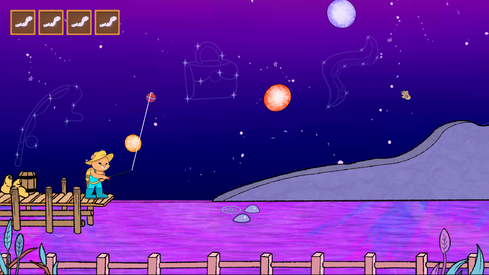
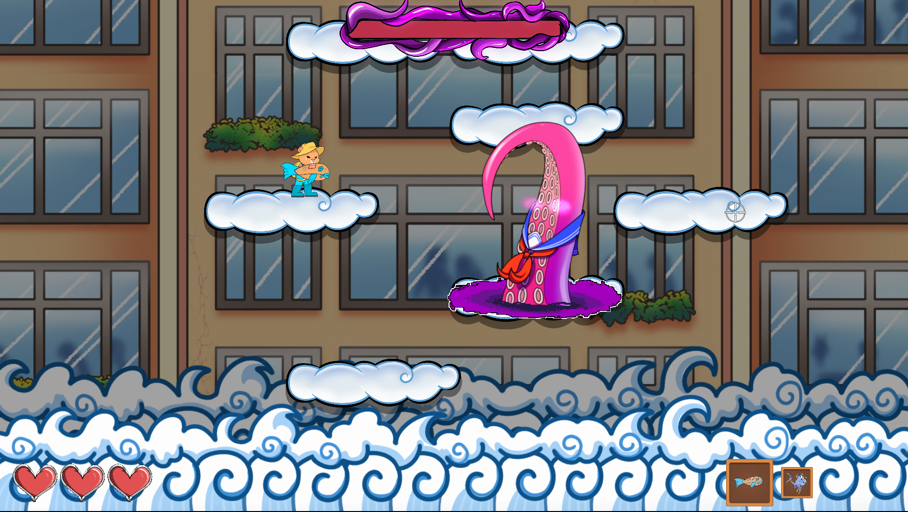
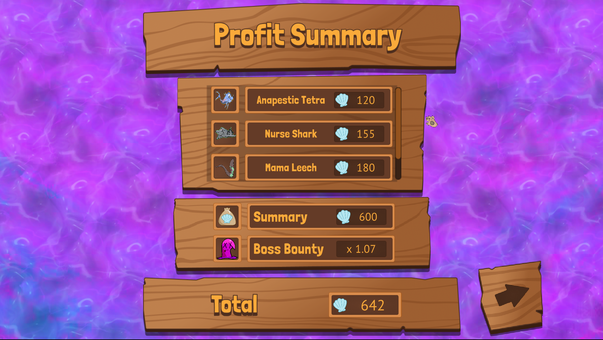

All Projects
About Andrew
All Projects
About Andrew


|
By Bait or By Bullet |

|
Project Type
My Roles
Source CodeSteam PageMade For
|
|

By Bait or By Bullet is a fishing game / shoot 'em up / boss rush roguelite, and if all of that isn't exciting enough, it was the largest development team I had been a part of up to this point; DIG4527C, the course it was made for at UF, is structured to let the entire class - over 20 people - act as a single studio. I was one of two engineering leads responsible for managing an 8-person programming team, coordinating with other teams to implement features and update goals, conducting thorough code reviews, and helping to lead full team meetings and presentations. It was wonderful to help lead such a passionate team, and what I learned from the role has been my greatest takeaway from the project.
As a programmer, I was soley responsible for the implementation of all features in our 2D town-down hub world: movement, NPC interactions, shop interactions, and associated interfaces. I also implemented all of our cutscene functionality, and assisted with projectile implementation in the boss arenas, as well as game-wide polish.
The NPC dialogue system is one of the most extensive game systems I've ever made. NPC conversations have different priorities and trigger events; they'll respond to you purchasing an item, defeating a boss, or losing to the same boss multiple times, as well as hold different conversations with you each time you return to the hub. The writers on this project (myself included) were excited to truly flex their narrative muscles on a large-scale project, so I obliged them with a system that could support our creativity.
|  |  |  |
Programming Accomplishments
|
Other Accomplishments
|

|
Link up on my LinkedIn profile |
Scratch an itch on my Itch.io page |
Send me an email at awk481@gmail.com |
© 2024 Andrew Kohler